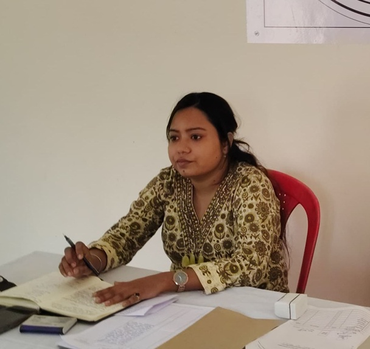

About Gram Panchayat Barai
Administrative details and leadership framework
Location & Overview
Barai is a vibrant rural settlement operating under the Chiraigaon Development Block in the historic district of Varanasi, Uttar Pradesh.
The local governing body focuses intensely on community development, sanitation (Swachh Bharat Mission), rural housing, asset creation under MGNREGA, and transparent delivery of public entitlements to households.
Administrative Desk
Block Office: Chiraigaon, Varanasi
State: Uttar Pradesh
Panchayat Type: Gram Panchayat
Primary Objective: Grassroots empowerment, infrastructure optimization, and welfare distribution.
Key Officials

Pankaj Giri
Elected head responsible for executing village development plans, resolving public grievances, and overseeing community upgrades.

Alka Sharma
Government-appointed administrative officer coordinating financial sanctions, official paperwork, and execution metrics.